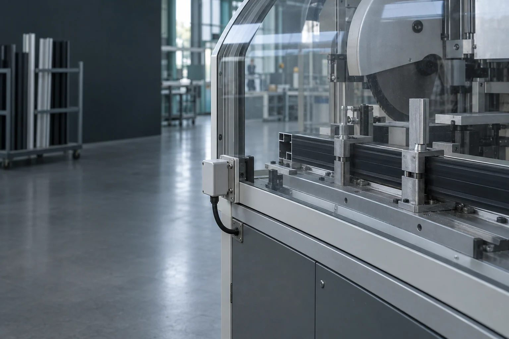
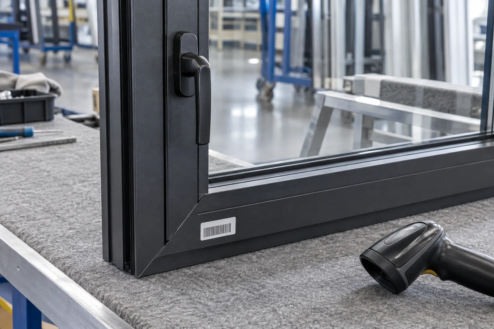
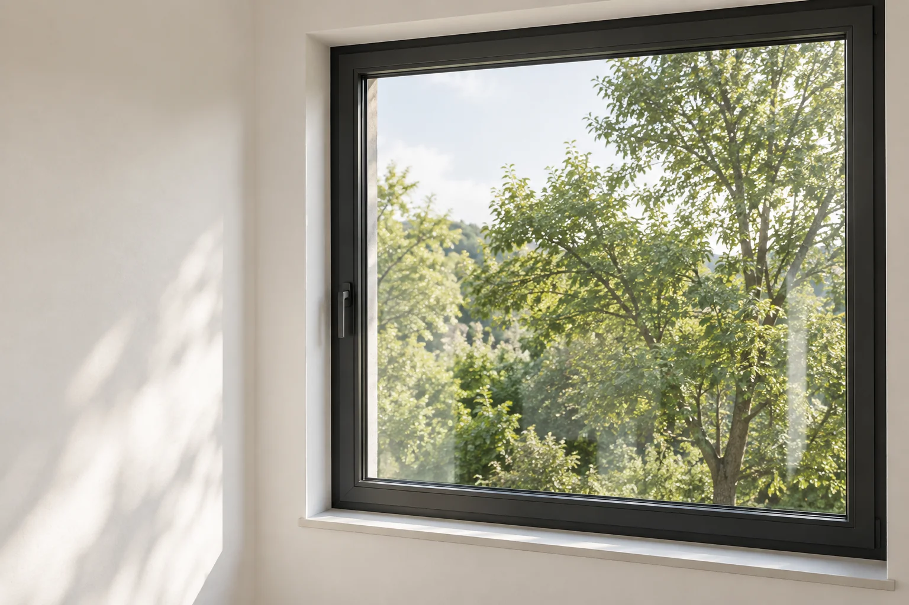

VARTUL / WINDOWS & GLASS
Every window.
A clear story.
From the profile. From the pane.
To the opening they become.
01 / MATERIAL IDENTITY
Two materials.
One beginning.
Aluminium profiles. Glass sheets.
Keep the identity of each incoming lot.
An illustrative aluminium-framed, single-glazed window.
Materials and processing depend on the specified system.
Know what arrived.
Receiving notes link each lot to the workshop. The glass supplier document still needs review.
02 / THE FRAME PATH
Cut. Machine.
Give it form.
Profiles are prepared and joined into a frame.
The work order carries the material link forward.

Cycle completed.
Work-order event linked to profile lot AL–118.
03 / THE GLASS PATH
A sheet.
A precise pane.
Glass is cut to the work order, with edges
prepared before glazing.
This route shows a single pane. Heat treatment, lamination
and insulated glass are separate, specification-led routes.
Separate paths.
Connected records.
The pane keeps its source-lot link before it reaches the assembly bench.
04 / GLAZING & ASSEMBLY
Where the
stories meet.
Frame, pane and fittings become a window.
Bind the component identities at assembly.

Three links. One window.
The sample assembly record retains all three component identities.
05 / INSPECTION TO HANDOFF
Ready for
its next view.
Record the inspection. Link the dispatch.
Keep the installation handoff in sight.
Illustrative installed appearance. Installation acceptance
is not established by this sample record.
Checklist attached.
An inspection record is available. No performance rating or certification is asserted.
06 / THE CONNECTIONS BEHIND THE WINDOW
Scan the window.
See both origins.
One product identifier. Two material histories.

PRODUCT → COMPONENTS → ORIGINS
The making, in reverse.
Trace the window through inspection and assembly, then follow its frame and glass paths.
Simulated identifier scan · No camera or live connection
- Window
- Inspection
- Assembly
- Frame + pane
- Both origins
Read the component lineage as a list
- →
- →
- Frame + pane + →
- Assembly → →
- Window →
- Pane cutting →
Illustrative lots, events and records. Capturing data reveals links; chain verification requires reviewing the evidence behind them.
VARTUL FOR WINDOW & GLASS MANUFACTURERS
Connected through
every transformation.
Chain Verification
Review the supporting records. See the gaps before a handoff is accepted.
An interactive demonstration. Device integrations and actual production data are not connected.